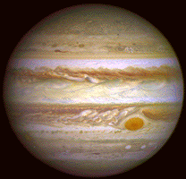
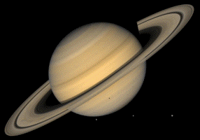
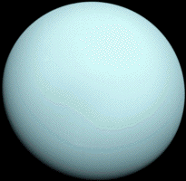
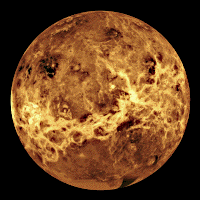

| Jupiter | Saturn | Uranus | Venus | |
|---|---|---|---|---|
| Images of the planets |  |  |  |  |
| Gravity (m/s2) | 23.1 | 9.0 | 8.7 | 8.9 |
| Distance from Sun (106 km) | 778.5 | 1432.0 | 2867.0 | 108.2 |
| Mean Temperature (C) | -110 | -140 | -195 | 464 |
| Number of Moons | 95 | 146 | 28 | 0 |
| Orbital Velocity (km/s) | 13.1 | 9.7 | 6.8 | 35.0 |
| Orbital Period (days) | 4331 | 10,747 | 30,589 | 224.7 |
| Length of Day (hours) | 9.9 | 10.7 | 17.2 | 2802.0 |